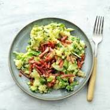

Recept voor andijviestampot

Heerlijk stampot verse andijvie met kaas en vega spekjes
1 kg gekookte kruimige aanrdappelen
150 gr geraspte kaas
75 gram vega spekjes
1 krop verse andijvie of 400 gr gesneden andijvie
Stappen
- bak de spekkies iets knapperig
- kook de geneden en gewassen andijvie enkele minuten mee met de aardappelen
- stamp de andijvie en aandappelen in een deel van het kookvocht fijn
- meng de kaas door de stampot. Als deze te droog is kun je er een scheutje plantaandige melkvervanger of margarine doorheen mengen
- doe de stampot op de borden en strooi daar wat uitgebakken spekjes overheen
- ga door tot het beslag op is
Home